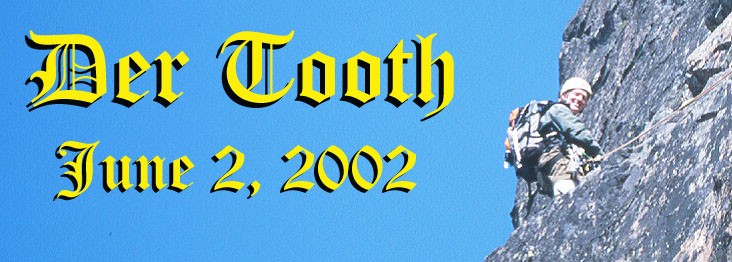
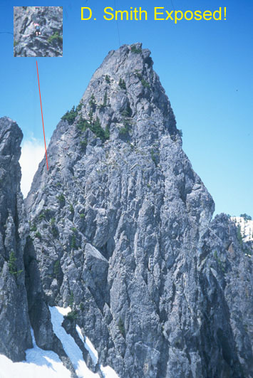
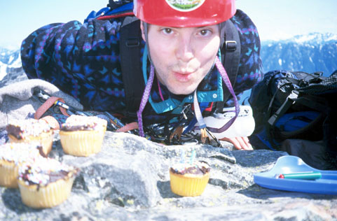
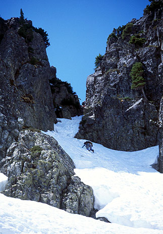
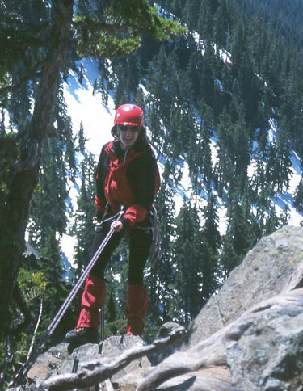
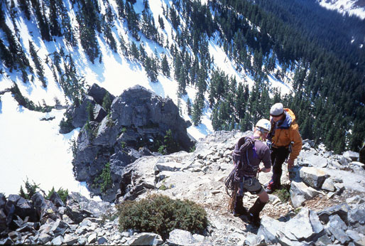
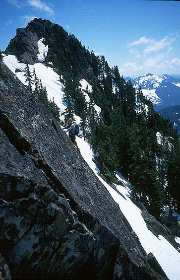
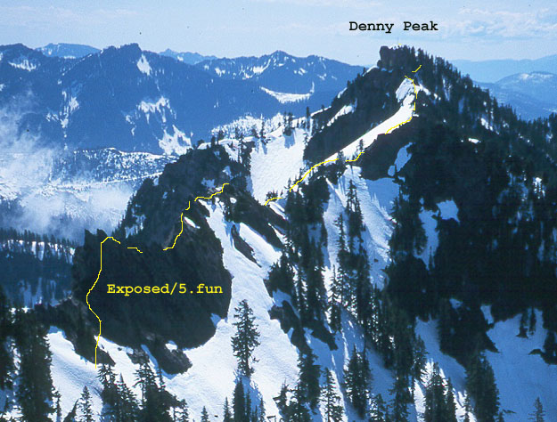
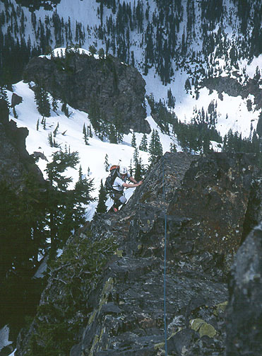
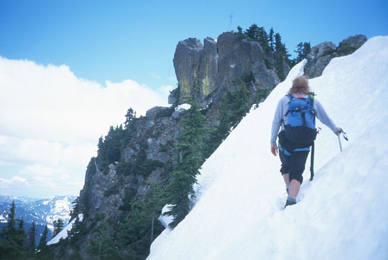

The Tooth
The Tooth (Peter’s Birthday)
Jeff Witt was in town, and Peter set up a chance for us to go climbing together. The total group was Jeff, Peter, Kim, Jake, Larry and myself. We parked at the upper lot and headed up the snowy path under blue sky. Jeff had been offered a guiding position for Exum Mountaineering. He’ll spend the summer guiding clients on the Grand Teton and other Wyoming peaks. He’d paid his dues, and we were all happy to see his dream come true! He told us about various climbing trips on the way up.










We climbed steeply to Pineapple Pass, not realizing that we’d missed the easier approach up one gully to the south until I’d topped out and discovered rappel slings. This was actually an enjoyable way to get to the base of the climb, but some in our party didn’t have ice axes, and that made the way feel less secure. It was quick though.
Jake and I started out first. I wore plastic boots because my light hikers needed resoling, and one of my leather boots was broken and in the shop. We used a doubled 8 mm rope, so had to climb 25 meter pitches. I set off, enjoying the dry rock and sun. Jake came up and we set off again. He and Angie just had a wonderful baby girl, and he’s been away from the mountains for awhile. The Tooth was a great reintroduction. Amazingly, we had it to ourselves until we reached the summit. Peter and Kim climbed on a rope, Jake and Larry just behind.
I was finding the climb more difficult in plastics, especially slabby sections where my feet dangled uselessly. I wore a pack, and as for the contents, I kept them secret. On the last pitch I angled left to the “catwalk,” but needed to use the catwalk for my hands because I didn’t trust the boots without good handholds. For me, this pitch was about 5.8, with a real dearth of protection until I reached the crack that angles back right. I was sweating pretty nicely and wishing for a top rope for a while there! At one point, one of the tiny edges I placed my boot on exploded under the pressure. Happily, I had good handholds. I really wished for leather boots, or maybe crampons, or maybe just in socks or barefoot.
I belayed Jake up, and settled in to enjoy the view and unveil my surprise. You see, it was also Peter’s birthday, and Kris had baked cupcakes the night before. I had a package with eight cupcakes, frosting, sprinkles and two candles! Jake, Jeff and Larry helped me build the cupcakes, and Jeff lit the candle. Peter and Kim appeared and we sang happy birthday. There is a picture of Peter blowing out the candle, but actually the wind beat him to it.
So we enjoyed a great dessert on top of a fun little peak, admiring the views of nearby peaks. Even Mt. Rainier was out in full splendor. We were so pleased to be out!
I was admiring the traverse over to Denny Peak and trying to entice some companions. I’d gotten a ride with Jake, so when no one wanted to go I was a little disappointed, but still happy with the day. It was only 11 am and we began our descent. Peter and I made the final rappels, collecting ropes as we went. I down-climbed the way we came up, and Peter, Larry and Kim decided to rappel. Jake and Jeff hiked around and down the easier way, and were later seen sunning themselves on a rock in Great Scott Bowl.
As I started down, Dan Smith hiked up and we had a happy meeting. “What a coincidence that you are here!” Dan had called my house in the morning asking about going cragging at Index. Since he couldn’t reach me, he decided to climb the Tooth instead. I crafted a happy solution, whereby I’d wait for Dan here, then we’d traverse to Denny Peak. Dan could give me a ride back to the city, and my Tooth companions could head home to a late lunch. I waved goodbye to the great group of friends, now bounding down towards Source Lake.
Hiking up to a saddle I got a nice view of the Tooth and the people now crawling all over it like ants. I watched Dan quickly climb and down-climb the route. He came down Pineapple Pass, and slipped slightly on the traverse over. I belted out a Simpson’s-style “Ha ha!” 23 heads turned to look!
“Hail fellow, well met!” Again we marveled at our good fortune to meet. We traversed snow to meet the ridge to Denny Peak just before a sharp, craggy crest. I pitifully squeaked an exemption to all rock leading due to my boots. I didn’t have a rope anymore, but I had a few slings and pieces of protection. Dan had a static 7 mm line. “Dynamic hip belays only.” I remembered the scars Mike Lubrecht had showed me one day from his dynamic hip belay of a falling leader. “Okay.” Gulp.
The first pitch had a tough move at the start. Dan scrabbled around, caught himself when a handhold broke, and finally resorted to putting on rock shoes. This helped, and soon he passed the hard section and reached a belay on the ridge crest. I grunted up, and Dan took off for a really fun pitch, climbing on and just below the crest on the right side of the ridge. The exposure and unexpectedly good, solid climbing had us shouting and belting out snippets of various songs.
We continued for another rock pitch then entered an easier section of snow and shrubby ledges. We climbed to a false summit and saw that Denny Peak was still a good distance away.
“Should we bail here?”
“NAW!”
For the next section I remember going up, down, and traversing steeper snow. There were moats and cornices for excitement, but mostly easy terrain. Near the summit of Denny Peak, we found many fuses from explosives. We also saw a hangman’s noose tied around a tree. Wha? We were also surprised to see some other people who came up from Alpental. At the summit we realized we are now eligible for the Mountaineer’s Seven Snoqualmie Summits Pin. That is, if we were members. Lessee, I’ve now got Chair, Snoqualmie, Lundin, Red, Thompson, Tooth, and Denny! High five!
We quickly got down to the Alpental parking lot with a mixture of glissading and running down the snowfields. Dan gave me a ride all the way home to Woodinville (hella nice of him, because it’s a long ways).
Thanks to Dan, Peter, Jeff, Kim, Jake and Larry for an excellent day in the mountains!